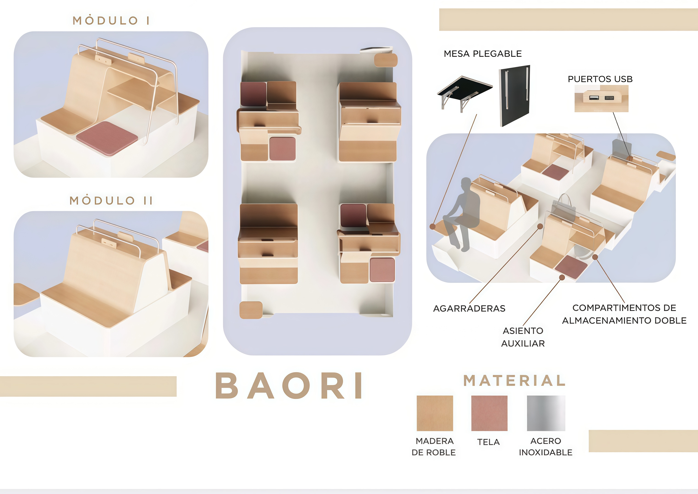
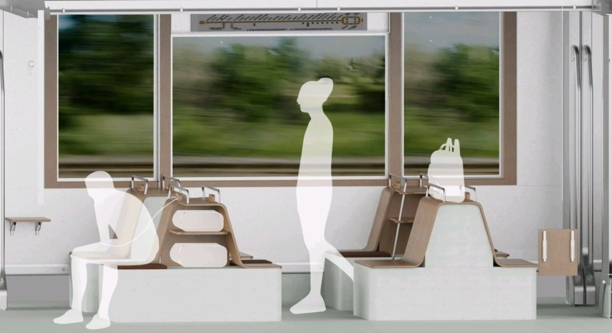

BAORI

BAORI es un proyecto de diseño de espacio colectivo que fomenta el encuentro y el uso compartido mediante una composición equilibrada de formas limpias y materiales honestos, con influencias del diseño español y nórdico. El proyecto fue ganador de un concurso para la empresa STADLER.
El proyecto se concibe desde una perspectiva modular y adaptable, permitiendo múltiples configuraciones según el contexto de uso, el espacio disponible y las necesidades del usuario.
Se prioriza siempre la ergonomía, la escala humana y la funcionalidad, integrando diseño, técnica y experiencia de usuario dentro de un mismo sistema coherente.